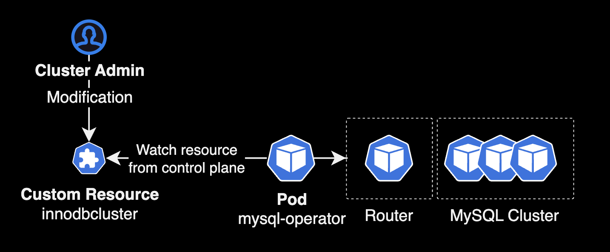
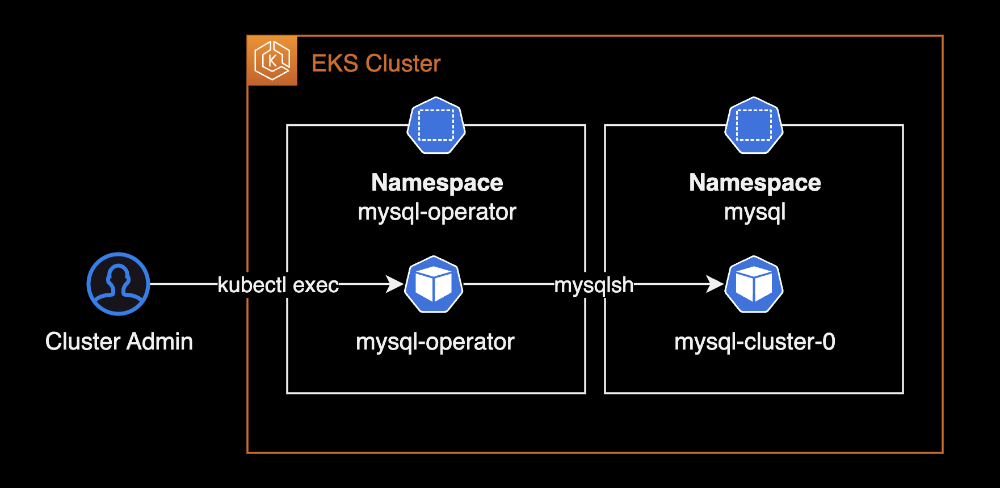
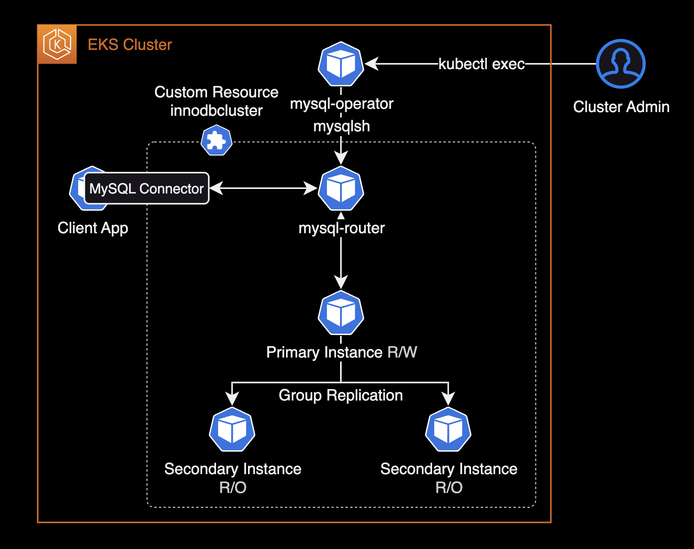

mysql operator
개요
MySQL Operator를 설치한 후 사용하는 가이드입니다.
배경지식
MySQL Operator for kubernetes
Kubernetes용 MySQL Operator는 Kubernetes 클러스터 내에서 MySQL InnoDB 클러스터 설정을 관리하는 오퍼레이터입니다.
MySQL Operator를 사용하면 롤링 업데이트 방식의 버전 업그레이드 및 MySQL DB 백업 자동화를 포함하는 설정, Maintenance를 통해 쉽게 MySQL DB 클러스터를 쿠버네티스 환경에서 관리할 수 있습니다.

환경
클러스터
- EKS : v1.28
- 워크로드 : EC2 Instance 기반 클러스터
헬름 차트
- Helm v3.13.3
mysql-operator: 8.2.0-2.1.1mysql-innodbcluster: 8.2.0
준비사항
작업자의 로컬 환경에 아래 CLI 툴들이 설치되어 있어야 합니다.
- helm : 헬름 차트 설치할 때 필요합니다.
- git : 차트 레포 다운로드에 필요한 CLI 툴 입니다.
- kubectl : 쿠버네티스 클러스터를 운영, 관리할 때 필요한 CLI 툴 입니다.
MySQL Operator
차트 다운로드
mysql-operator 프로젝트는 Github Cloud에 오픈소스로 제공됩니다.
로컬 환경에 mysql-operator 레포지터리를 다운로드 받습니다.
git clone https://github.com/mysql/mysql-operator.git
cd mysql-operator/helm/mysql-operator
MySQL Operator 차트 구조는 다음과 같이 2개로 구성되어 있습니다.
$ tree mysql-operator/helm/ -L 2
mysql-operator/helm/
├── mysql-innodbcluster
│ ├── Chart.yaml
│ ├── README.md
│ ├── charts
│ ├── crds
│ ├── templates
│ └── values.yaml
└── mysql-operator
├── Chart.yaml
├── README.md
├── charts
├── crds
├── templates
└── values.yaml
9 directories, 6 files
- mysql-operator : MySQL Operator 설치에 필요한 헬름 차트
- mysql-innodbcluster : MySQL 클러스터 생성에 필요한 헬름 차트
설치 순서는 MySQL Operator를 가장 먼저 설치한 후, 커스텀 리소스인 mysql-innodbcluster를 설치하면 됩니다.
mysql-operator 차트 설치
mysql-operator 차트를 mysql-operator 네임스페이스에 먼저 설치합니다.
helm upgrade \
mysql-operator . \
--install \
--namespace mysql-operator \
--create-namespace \
--values values.yaml \
--wait
mysql-operator 차트를 설치하면 MySQL Operator 파드가 새로 생성됩니다.
$ kubectl get all -n mysql-operator
NAME READY STATUS RESTARTS AGE
pod/mysql-operator-64d8b6dd5b-zlpqm 1/1 Running 0 3d15h
NAME TYPE CLUSTER-IP EXTERNAL-IP PORT(S) AGE
service/mysql-operator ClusterIP 172.20.39.138 <none> 9443/TCP 3d15h
NAME READY UP-TO-DATE AVAILABLE AGE
deployment.apps/mysql-operator 1/1 1 1 3d15h
NAME DESIRED CURRENT READY AGE
replicaset.apps/mysql-operator-64d8b6dd5b 1 1 1 3d15h
MySQL Operator에서 사용하는 커스텀 리소스 목록입니다.
$ kubectl api-resources --api-group mysql.oracle.com
NAME SHORTNAMES APIVERSION NAMESPACED KIND
innodbclusters ic,ics mysql.oracle.com/v2 true InnoDBCluster
mysqlbackups mbk mysql.oracle.com/v2 true MySQLBackup
클러스터 관리자가 innodbclusters 리소스를 생성하면 MySQL Operator는 이를 감지한 후 쿠버네티스 클러스터 상에 MySQL Cluster를 파드 형태로 구성하는 동작 방식입니다.
클러스터 상세 설정
로컬에 다운로드 받은 mysql-operator 레포지터리에서 아래 경로로 이동합니다.
cd mysql-operator/helm/mysql-innodbcluster
mysql-innodblucster의 values.yaml 파일을 수정합니다.
# helm/mysql-innodbcluster/values.yaml
image:
pullPolicy: IfNotPresent
pullSecrets:
enabled: false
secretName:
credentials:
root:
user: root
password: mysqlpassword
host: "%"
tls:
useSelfSigned: true
# caSecretName:
# serverCertAndPKsecretName:
# routerCertAndPKsecretName: # our use router.certAndPKsecretName
#serverVersion: 8.0.31
serverInstances: 3
routerInstances: 1 # or use router.instances
baseServerId: 1000
router:
instances: 1
podSpec:
containers:
- name: router
resources:
requests:
memory: "300Mi" # adapt to your needs
cpu: "100m" # adapt to your needs
limits:
memory: "1024Mi" # adapt to your needs
cpu: "1000m" # adapt to your needs
podSpec:
containers:
- name: mysql
resources:
requests:
memory: "1024Mi" # adapt to your needs
cpu: "1800m" # adapt to your needs
limits:
memory: "2048Mi" # adapt to your needs
cpu: "2000m" # adapt to your needs
mysql-innodbcluster 차트 설치
mysql-innodbcluster 차트를 설치하면 동시에 MySQL 클러스터가 생성됩니다.
helm upgrade \
mysql-cluster . \
--install \
--namespace mysql \
--create-namespace \
--values values.yaml \
--wait
이 시나리오에서 각 헬름 차트는 다음 네임스페이스를 사용합니다.
$ helm list --all-namespaces --filter 'mysql'
NAME NAMESPACE REVISION UPDATED STATUS CHART APP VERSION
mysql-cluster mysql 1 2024-01-09 14:41:17.942536 +0900 KST deployed mysql-innodbcluster-2.1.1 8.2.0
mysql-operator mysql-operator 1 2024-01-09 14:39:22.884685 +0900 KST deployed mysql-operator-2.1.1 8.2.0-2.1.1
| No. | 헬름 차트 이름 | 네임스페이스 | 차트 설명 |
|---|---|---|---|
| 1 | mysql-operator | mysql-operator | MySQL 오퍼레이터 파드 |
| 2 | mysql-innodbcluster | mysql | MySQL 클러스터 |
MySQL Cluster 클러스터의 상태를 확인합니다.
$ kubectl get pod -n mysql
NAME READY STATUS RESTARTS AGE
mysql-cluster-0 2/2 Running 0 10m
mysql-cluster-1 2/2 Running 0 10m
mysql-cluster-2 2/2 Running 0 10m
mysql-cluster-router-7b795dcbf7-xvshs 1/1 Running 0 9m10s
클러스터를 구성하는 모든 MySQL 서버 및 라우터는 실제로 파드입니다.
설치한 mysql-cluster 차트의 세부 설정 값을 조회합니다.
helm get values mysql-cluster -n mysql
MySQL Operator에서 사용하는 커스텀 리소스인 innodbcluster는 파드처럼 네임스페이스 영역에 속하는Namespaced 리소스입니다.
헬름 차트로 설치한 innodbcluster 리소스를 조회합니다.
# Use fullname
kubectl get innodbcluster -n mysql
# Use shortname
kubectl get ic -n mysql
innodbcluster리소스의 축약형 이름(Shortname)인ic를 사용해서 조회할 수도 있습니다.
3개의 MySQL DB로 구성된 클러스터이며 온라인 상태가 되면 정상 접속이 가능합니다.
NAME STATUS ONLINE INSTANCES ROUTERS AGE
mysql-cluster ONLINE 3 3 1 22m
MySQL Operator는 innodbcluster 리소스를 감지한 후 MySQL 클러스터와 앞단에 Router를 자동 구성합니다.
$ kubectl get pod -n mysql
NAME READY STATUS RESTARTS AGE
mysql-cluster-0 2/2 Running 0 22m
mysql-cluster-1 2/2 Running 0 22m
mysql-cluster-2 2/2 Running 0 22m
mysql-cluster-router-9f9bd9b99-kmdl2 1/1 Running 0 21m
MySQL Cluster의 실체는 파드이며 Statefulset에 의해 MySQL 파드가 배포됩니다.
MySQL Operator에 의해 쿠버네티스 시크릿도 같이 자동 생성됩니다.
$ kubectl get secret -n mysql
NAME TYPE DATA AGE
mysql-cluster-backup Opaque 2 42h
mysql-cluster-cluster-secret Opaque 3 42h
mysql-cluster-privsecrets Opaque 2 42h
mysql-cluster-router Opaque 2 42h
sh.helm.release.v1.mysql-cluster.v1 helm.sh/release.v1 1 42h
mysql-cluster-cluster-secret 시크릿이 MySQL DB 파드에 비밀번호로 주입됩니다.
MySQL DB 파드의 상세 설정을 확인합니다.
kubectl get pod -n mysql mysql-cluster-0 -o yaml
...
env:
- name: MYSQL_INITIALIZE_ONLY
value: "1"
- name: MYSQL_ROOT_PASSWORD
valueFrom:
secretKeyRef:
key: rootPassword
name: mysql-cluster-cluster-secret
MYSQL_ROOT_PASSWORD 환경변수가 mysql-cluster-cluster-secret 시크릿을 참조하고 있습니다.
MySQL DB 접속
운영 관리의 목적으로 생성한 MySQL DB 클러스터에 접속해야할 경우, 먼저 MySQL Operator 파드에 접속합니다.

대부분의 MySQL DB 운영 업무는 MySQL Shell을 사용해서 수행하게 됩니다.
MySQL Shell 8.0 공식문서에서도 MySQL Shell로 MySQL Server 5.7, 8.0를 관리하도록 권장하고 있습니다.
kubectl을 사용해서 mysql-operator 파드에 접속합니다.
kubectl exec -it \
-n mysql-operator \
mysql-operator-64d8b6dd5b-zlpqm \
-- mysqlsh
MySQL Operator 파드에는 기본적으로 mysqlsh 8.x 버전이 설치되어 있습니다.
MySQL Shell 8.2.0
Copyright (c) 2016, 2023, Oracle and/or its affiliates.
Oracle is a registered trademark of Oracle Corporation and/or its affiliates.
Other names may be trademarks of their respective owners.
Type '\help' or '\?' for help; '\quit' to exit.
MySQL JS >
mysqlsh의 \connect 명령어를 사용해서 생성한 innodbcluster DB에 접속합니다.
MySQL JS > \connect root@mysql-cluster.mysql.svc.cluster.local:3306
Creating a session to 'root@mysql-cluster.mysql.svc.cluster.local:3306'
Please provide the password for 'root@mysql-cluster.mysql.svc.cluster.local:3306': **********
Fetching schema names for auto-completion... Press ^C to stop.
Your MySQL connection id is 183
Server version: 8.2.0 MySQL Community Server - GPL
No default schema selected; type \use <schema> to set one.
root 계정의 password를 입력해야 로그인이 가능합니다.
root 계정의 패스워드는 mysql-innodbcluster 헬름 차트의 credentials.root.password 값을 입력합니다.
MySQL Shell에서는 \sql, \py 및 \js 명령어를 사용해서 모드를 변경할 수 있습니다.
\sql 명령어를 실행해서 MySQL Shell을 기본값 JavaScript 모드에서 SQL 모드로 변경합니다.
MySQL JS > \sql
Switching to SQL mode... Commands end with ;
Fetching global names for auto-completion... Press ^C to stop.
MySQL Shell에서 사용 가능한 명령어 리스트를 확인하려면 \help 또는 \?를 입력합니다.
현재 접속한 MySQL DB의 호스트네임 및 버전을 확인합니다.
-- Hostname 및 DB 버전 확인
SELECT @@hostname AS 'Hostname', VERSION() AS 'MySQL Version';
+-----------------+---------------+
| Hostname | MySQL Version |
+-----------------+---------------+
| mysql-cluster-0 | 8.2.0 |
+-----------------+---------------+
1 row in set (0.0004 sec)
현재 mysql-cluster-0 파드에 접속한 상태이며, MySQL 버전은 8.2.0 입니다.
MySQL 클러스터를 생성하면 기본적으로 Group Replication 형태로 HA 구성이 되어 있습니다.
클러스터 생성 및 초기화 과정에서 MySQL 클러스터 이중화 상태가 정상적으로 구성되었는지 확인합니다.
-- Group Replication 상태 확인
SELECT member_host, member_state, member_role, member_version
FROM performance_schema.replication_group_members;
+-----------------------------------------------------------------+--------------+-------------+----------------+
| member_host | member_state | member_role | member_version |
+-----------------------------------------------------------------+--------------+-------------+----------------+
| mysql-cluster-1.mysql-cluster-instances.mysql.svc.cluster.local | ONLINE | SECONDARY | 8.2.0 |
| mysql-cluster-0.mysql-cluster-instances.mysql.svc.cluster.local | ONLINE | PRIMARY | 8.2.0 |
| mysql-cluster-2.mysql-cluster-instances.mysql.svc.cluster.local | ONLINE | SECONDARY | 8.2.0 |
+-----------------------------------------------------------------+--------------+-------------+----------------+
3 rows in set (0.0005 sec)
클러스터를 구성하는 3개 MySQL DB가 모두 온라인 상태이며 Primary - Secondary 구성임을 확인할 수 있습니다. 현재 저희가 접속한 DB는 Primary DB인 mysql-cluster-0 입니다.
MySQL Operator와 InnoDB Cluster의 아키텍처입니다.

참고자료
MySQL Operator
MySQL Operator 공식문서
mysql-operator Github
mysql-operator Github chart
MySQL Shell
MySQL Shell 8.0 공식문서